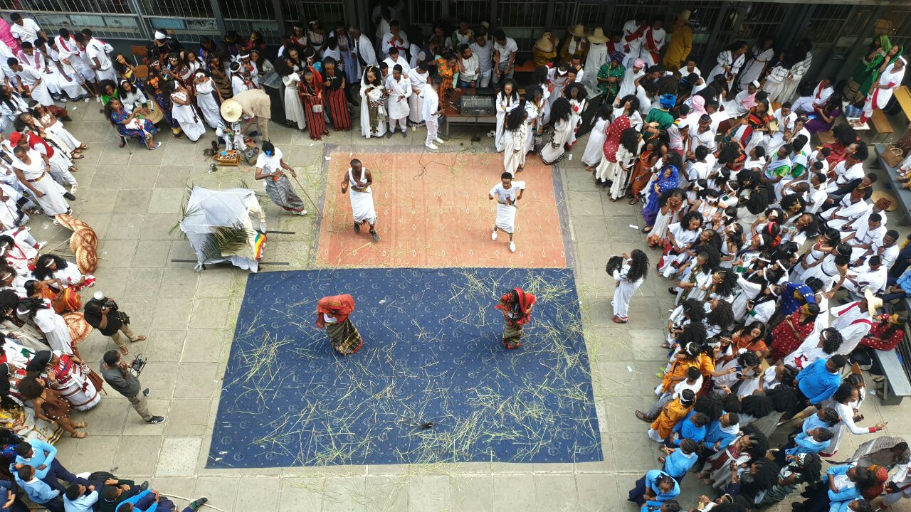
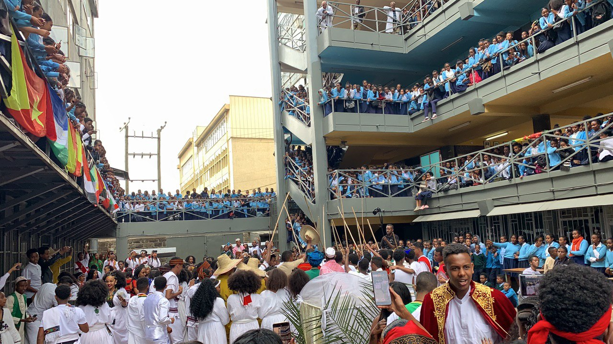
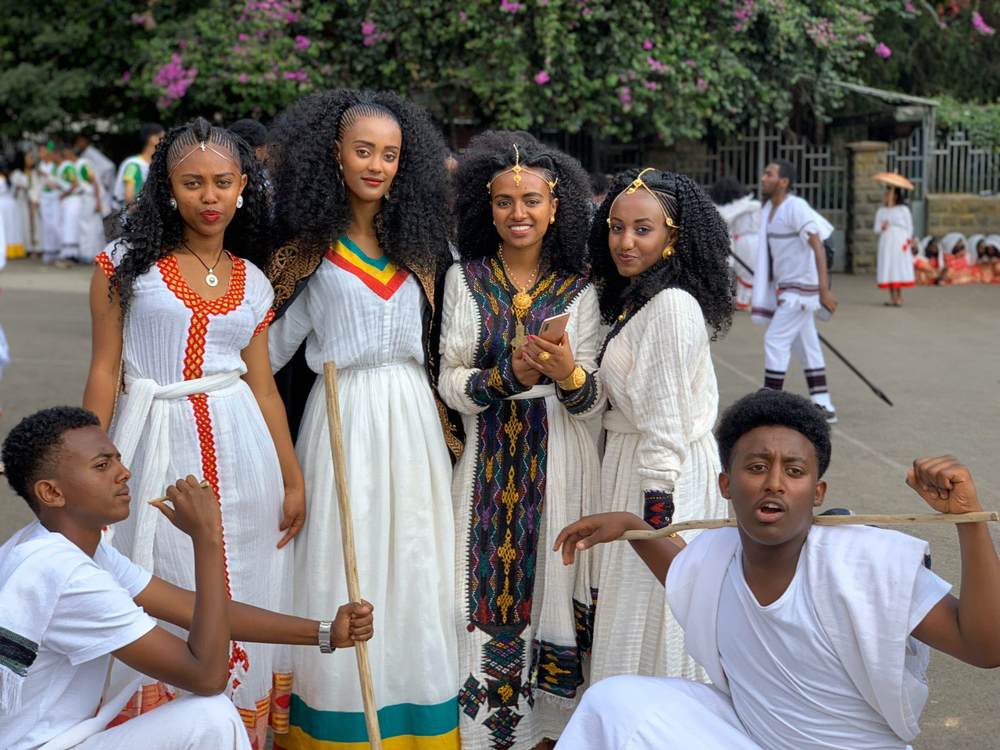
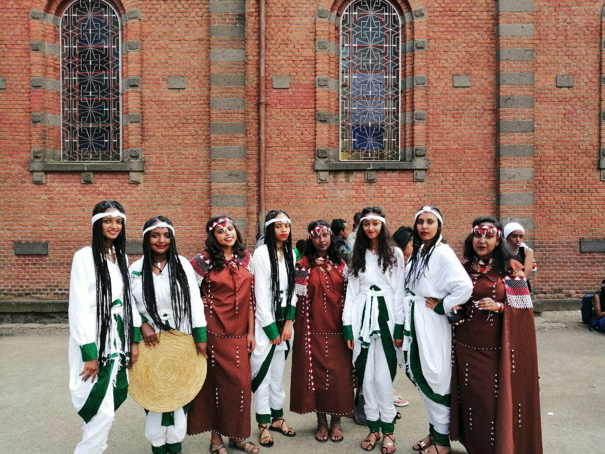
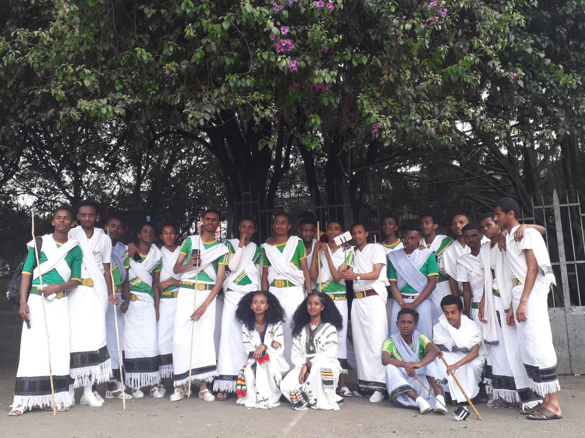
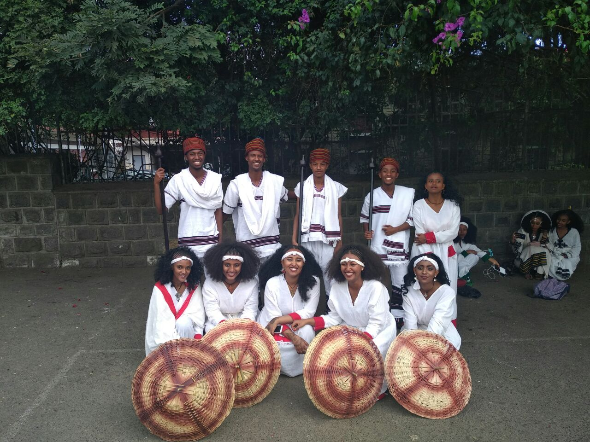
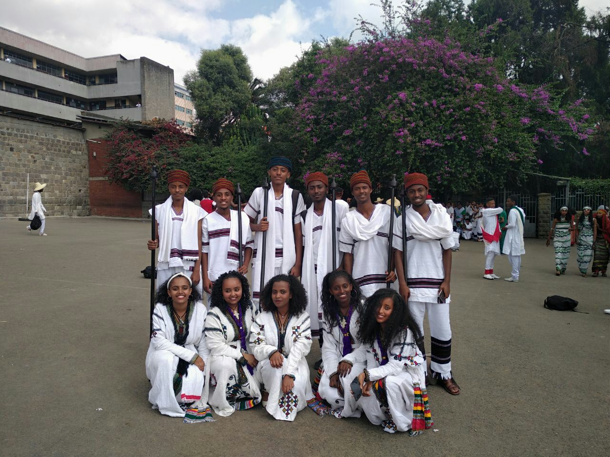
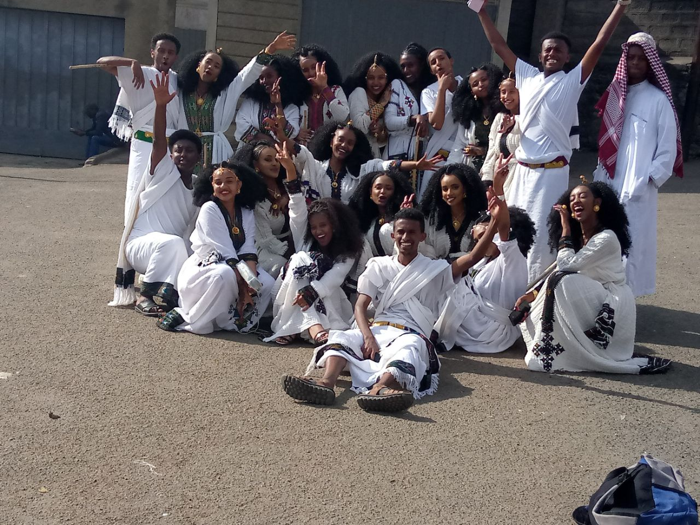
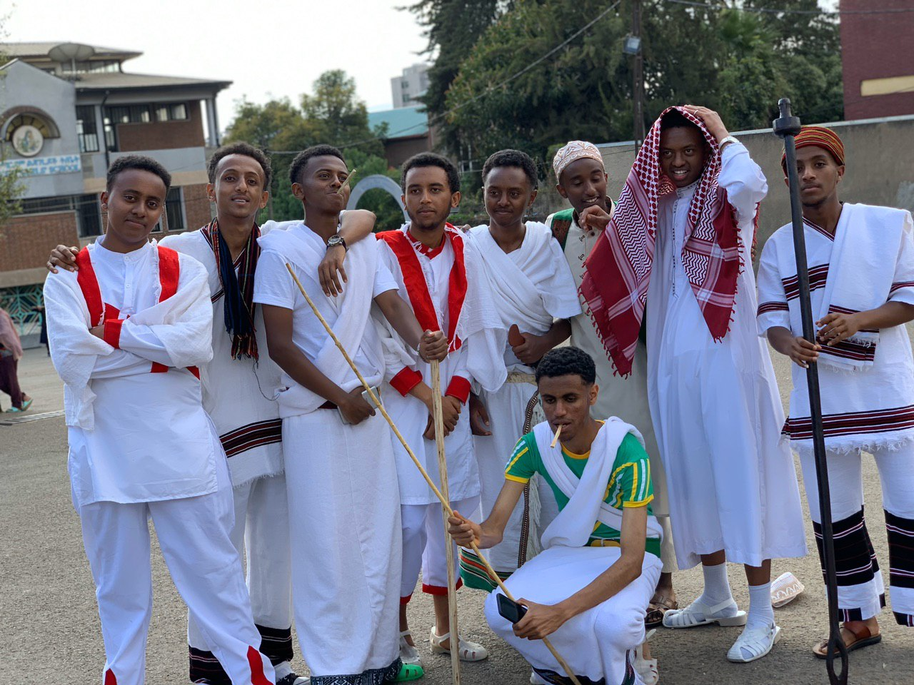

Culture Day
Introduction
The schools most expected holiday was here again. The seniors were excited as to what exactly culture day was going to be all about. In order to promote greater harmony and tolerance, the students wore different costumes of their own choice of the day. They had the best experience of finding out traditional dresses with which they were unfamiliar with. Today, the girls were much prepared and organized will be an understatement. How they figured out what traditional clothes they are going to wear, how they will style their hairs and do their makeups the month before are what I will never know.
On that day, everyone came in the brightest cultural clothes they could find. I feel like I am slightly underdressed. Everybody look amazing with their cultural clothes on. Instead of the usual mornings, the excited faces of the students were hard to miss. The first couple of hours spent on decorating the school with the flags of regional states and the countries national flag and any last time touches before the ceremony begun. The ceremony started by the hosts introducing the events of the day. They were many programs than needed. I personally think it would have been great if more time would have given to the students to have some fun. Overall, it was an incredible experience the students never forget.
Interviews
We interviewed some of our school mates about culture day just before the event. About the preparation, and how they felt at the moment and so on. Most of them replied that they were pretty excited and every one fitted at their given place at the right time. Before the holiday, they went to different places and explored different kinds of cultural clothes to rent with their friends which created a memorable experience. But some of them were not so happy with the turnout. Mostly because they couldn't find the cloth that could go with the amount of money they had. While looking at the expectations and reality, at some point, the expectations students had were fulfilled.
But there were also some situations that failed to make somethings happen. Seeing the different types of cultural clothes, cultural dance, drama and a poem were done while expecting to see Rophnan at the celebration, of course, wasn't.
Q: How was the event, did you like it?
A: “It was excellent. It was different from how the past batches
celebrated it; I think it will make other the future celebrators look
up to us. But there was a problem too, it ended quickly. I think it
would be better if we got more time”
Q: Which parts did you guys like the most?
A: “everything was really cool, we like it. The “menebaneb” part was
really great. I liked the drama too. It was very helpful for promoting
the different cultures we have.”
Q: Were there any flaws you saw? Wished for something else?
A: “today was really fun. I personally think that today's celebration
was not that different from last years. I think it would have been
better if we were more different, but overall, I enjoyed it.”
Q: How was the preparation (seldom)
A: “I really liked it. We all looked silly and funny; it was very
enjoyable, preparing for this. We will see how it goes. “
Q: Any funny incidents?
A: “the way we danced when practising was funny”
Q: Any problems encountered?
A: “We had problems with our coordination, there were some gaps when
practising. I think, next year, the student should have rigid and
strong practices.”
Q: What do you expect to happen today?
A: “I hope that we will definitely have fun, create memories together,
and also have good photos together.”
Q: How do you describe it?
A: “the vibe now is very warm, I like it. The ladies are full of
makeup that I can't recognize them. Every one looks colourful and
excited. “
Q: What problems did you see when practising?
A: “there were problems with coordination during practice. But the
rest of it was great. We have practised hard to learn each and every
move in our dances, for “shilelawoch”, “fukerawoch”, and “poems”. We
all did our best and consider ourselves ready. I hope you will enjoy
it.” Many people wanting to be members of the committees, one trying
to supervise and teach the other. Songs changing every now and then
were really challenging for the students planning on presenting
something to the batch. -How was the preparation for culture day?
"We're trying to look our best for the celebration like everyone else"
-What do you expect from this day? "Great concerts and I am really
hoping for the beauty contest." "It was great, we have been going to
different places to rent clothes and make our hairs and that was a
great experience." "I think it is going to be great where we will make
memories together. Really hoping that Rophnan and Negus will come. I
also expect 11th graders to learn from this."
Photos ...








